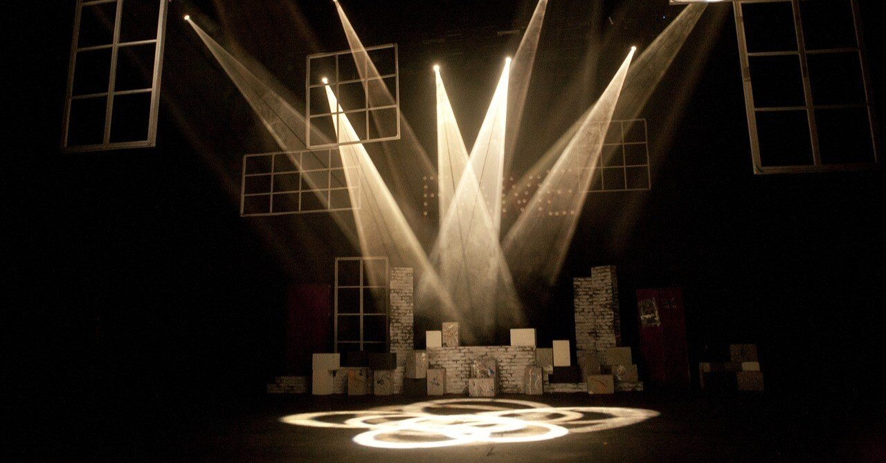

お疲れ様でした。
ふと、そんな言葉をかけられた。
声のする方を見ると、小柄の男性が笑みを浮かべている。フォーマルな格好をしているが、年齢は掴めない。それなりの年齢にも見えるし、随分年下な少年のようにも思える。
年齢不詳とはこのことだと颯介は思う。
「えっと。どちら様ですか？」
そんな問いかけに対しても、表情を崩すことなく男は喋り続けている。ちょっとムッとするが、どうやらここには自分と相手しかいないようだから耳を傾けるほかない。
「二瓶颯介さん。今から52秒前、あなたは神奈川県横浜市緑区のとある横断歩道を渡っている途中、信号無視をしたトラックに轢かれ死亡しました。38年と42日の人生でした」
男の、まるで空で覚えているような口ぶりに颯介は戸惑う。口調は淡々としており、抑揚はまるでない。
「まさか」
なんとか言葉を返そうにも、そんなありきたりな言葉しか出てこなかった。
まず、自分自身が死んでいるという感覚が一切なかった。こうしている間にも肺は酸素を取り込んでいるし、目も瞬いている。手を開いては閉じもするが、問題なく動く。嘘か、何かのドッキリを仕掛けられているのではないかとすら思えた。
「つきましては、常世案内人の私、荒木田がこれからの諸手続きについて説明します。ご質問は最後に受け付けますので、一旦すべて聞いてください」
颯介は混乱しつつも彼の言葉に従うことにする。というか、そうするしか手がない様子。
ふいに荒木田が指を鳴らすと、教室のような場所に移り変わる。颯介はまるで生徒のような感覚で席に座っており、教卓の横に荒木田が平然と立っている。
目の前には黒板と同じくらいの大きさのスクリーンがあり、そこにはなにやら、事故現場のような映像が映し出されていることに気がつく。
よく見てみると、その画面にはあろうことか頭から血を流し倒れている自身の姿と、トラックの運転席から飛び出る青年の姿を颯介は確認する。
「あなたを轢いたのは清水湊人。年齢は26歳で、運送会社の従業員です。彼は睡眠不足が原因でブレーキとアクセルを踏み間違えて、誤って赤信号を時速110キロで突っ込んでしまい、あなたを轢きました」
「あの、ちょっと待ってください。冗談ですよね？ さっきからやけに手の込んだセットやら映像やら使っていますけど、何の番組ですか？」
颯介はようやく自らの考えを口にする。
荒木田は颯介を一瞥すると、小さなため息をついた。
「これは現実です。病気や加齢で死期を悟っているほとんどの方は、死亡理由を説明する現段階ですんなり受け入れてくれるのですが、あなたのように不慮の事故や事件に巻き込まれ命を落とされた方は、決まって何かの罠だと疑います。まあ、気持ちはわからなくもないですが」
荒木田はそこで初めて瞬きをした。とても自然な現象だが、なぜかそんなことに颯介は安心感を覚える。
「……僕、本当に死んだんですか？」
「残念ながら」
未だに実感はないし、初対面であるはずの荒木田に妙な説得力があることも手伝ってか、颯介は受け入れがたい大きな絶望的事実に飲み込まれてしまいそうだった。何をどうしたらいいのか、何をどう考えればいいのかまったくわからない。
ゴホンと荒木田は咳払いをする。
「ついあなたの質問に答えてしまいました。先ほど申しましたように、これ以上の質問は説明の後に受け付けますので」
それから1時間ほどだろうか。颯介は荒木田から死後に行うべき手続きの概要について、説明を受けた。しかし、その間も颯介は自身が死んだ事実を心のうちで咀嚼するだけで精一杯で、説明された内容を半分も覚えている自信がなかった。
「では、詳細は各担当者から説明いたします」
そんな様子も露知らず、荒木田が自らの役目を終えた顔で教室から退席すると、そこから代わる代わる担当者がやってきた。老若男女、様々な年代の人間が出入りし、今後の手続きについて説明をし始める。
天国と地獄の査定、初七日の出没希望場所、新盆期間に存命中の人物の夢に出る条件など、手元にメモする道具もないから、記憶力の悪い頭を総動員して覚えるしかなかった。
「走馬灯課の高橋と申します」
5人目となる担当者が入ってくる。見たところ、颯介と同世代の男性だ。
扉から教卓までの短い道のりでなぜか転びそうになっている。明らかにほかの案内人とは雰囲気が違うな、と颯介は思う。
「えー走馬灯課では、ご存命の方が最期に観る走馬灯に、ワンカットだけ二瓶さんを反映するよう手続きをします」
そして、高橋から紙を手渡される。メモ用紙程度の小さなものだ。
「ここに、ご自身が走馬灯に出たいと希望する人物の氏名をご記入ください。なお、一度提出されると変更はできません」
「そう言われても。今の僕には他人のことを考える余裕なんてないですよ」
颯介が素直な気持ちを吐露すると、高橋はパンと音を立てながら手のひらを合わせた。
「ですよね～。でも頼みますよ。ここにいる間に済ませないといけない手続きなので。ほら、大学に行っていた二瓶さんならわかるでしょ？ 入学式の日にたくさん教材や履修の話を聞かされて、まだ入学したてなのにそんな余裕なんてないよ～っていう気持ち。あれと同じですから」
「わかるような、わからないような」
「いや、そこは強く同意してください！ ね！」
いたずらに笑いながら話す高橋がなんだか親しみやすくて、つい頬を緩める。
気づけば目を瞑り、さながら「お願い！」のポーズを決める高橋を見て、颯介は気持ち新たに紙と向き合う。なんだか、ここにきて初めて気持ちが軽くなったような気がする。
「筋書のない人生といいますが、残念ながら大体の人間には“運命”という名のシナリオが存在します。人は誕生した瞬間から、両親から受け継いだ身体的・精神的遺伝や家庭環境などのパーソナルな部分と、生まれた時代や国といった社会的部分とを総合的に鑑みると、そのほとんどはあらかじめ決められているといってもいいでしょう」
紙とにらめっこしている間にも、高橋は滔滔と語っている。
その口ぶりは嫌味なほど落ち着いていて、荒木田同様、訓練された“こっち”側の世界の案内人だと再認識させられる。
「急に荒木田さんみたいな雰囲気で話すもんだから、びっくりしました」
視線を高橋に戻して言うと、その表情はみるみるうちに曇っていった。
「ああ。荒木田さんね。でも、あの人と同じにしないでくださいよ～。私、苦手なんです」
「えっ？」
「いやぁ、だってあの人、人造人間みたいじゃないですか？ 感情がないっていうか。この仕事始めて300年ちょっとって言ってましたけど、あの感じをずっとやっていて飽きないんですかね。あんな風にオートマチックに仕事しても楽しくないでしょうに」
「ちょっと待って。高橋さん、めっちゃ言うじゃん、荒木田さんのこと」
「また悪い癖が……！ すみませんね、本人の目の前じゃなく陰で言っても意味なんてないのに。つい愚痴っちゃうんです、私」
なんだかとても人間くさい人だな、と思いながら、颯介の心は徐々に平静を取り戻していた。
颯介にとって、なんてことのない会話がこんなにもありがたく思ったことは今までなかった。
「話が逸れてしまいましたが、私が言いたいのはこれです。これまでの人生、ここらで振り返ってみませんか？」
高橋の一言をきっかけに、颯介は突如として幕を下ろしてしまった自身の人生を思い返してみる。
脱サラして自営業として働いていた父と看護師の母のもとに生まれ、2歳上のよくできる兄に劣等感を抱きながら成長した少年期。
小中高と進学後、そこそこのレベルの国立大学を卒業するも就職せず、アルバイトをしながら小劇団の舞台に立ち、いつか売れっ子俳優になることを夢見てきた人生。
もちろん周囲に馬鹿にされることも多々あった。生活はずっと苦しかったし、特別見た目が優れているわけでもなかったから、異性からモテることもなかった。
でも、ここ数年は地道な下積みが功を奏してか、単館の映画館でのみ上映される作品の脇役をもらえたり、何度かは地上波テレビの再現VTRにも出演できるようになっていた。
そう考えると、普通だったら身の丈のあった会社に入り、家族を作り、人並みの暮らしをするはずのシナリオだったのに、こうして最期を迎えるまで、その運命に抗ってきた人生だったのかもしれない。
そんな、流れに逆行し続けた人生の中で出会えた大切な人。一人だけ、パッと思い浮かんだ顔があった。
颯介は高橋から手渡された紙に「谷美波」と書いた。
彼女は端的に言ってしまえば、颯介の友達以上恋人未満の人物である。こう書くと「恋人ではなかったのか」と思うだろうが、確かに恋人ではなかったが颯介にとっては数少ない心を許せる人物で、限りなく恋人のような存在だった。
颯介がペンを走らせ、書き終えるのを確認すると、高橋は軽やかにその紙を掬い上げた。
「承りました。では、この方が最期を迎える時に、二瓶さんを走馬灯のワンカットに入れていただくよう“上”に申請しておきます」
「……これから僕はどうなるんですか？」
「どうなるもなにも、それは先ほど説明したように、天国か地獄かの査定次第です。査定結果は49日後に書面にて通知しますので、必ずご確認くださいね。というか、そうしないと逝き場所に困るので確認せざるを得ませんが」
そう言うと、高橋は先ほどの荒木田と同じように、パチンと指を鳴らした。
また場所が移り変わった。そこは生前住んでいた部屋だった。つい数時間前まで、その場所にいたことを、颯介は他人事のように回顧する。
「初七日の時のみ外出が許されますが、その日以外はこちらで滞在してください。ちなみにこれは私の粋な計らいなどではなく、査定結果はどんな人も、もれなく生前過ごした部屋を忠実に模した場所で待っていただくことになっているためですので、勘違いのなきよう」
「ああ。初七日は希望場所を出さなかったのですが、その場合は？」
「ええ！？ そんな人もいるんですか！？」
高橋はわかりやすく目を丸くする。
思わず軽蔑するような目で見られるのかと思ったが、意外にも高橋は「物好きな人もいるもんだ」と呟いている。この能天気さが、なんだか愛おしいとすら颯介は思う。
「失礼、取り乱しました。その場合は査定結果が出るまで、こちらでゆっくりしていてください。……と私に言われなくても、慣れ親しんだ部屋だと思うので、必然的にくつろげるかと思いますが。では、次の方も待たせているので、私はここで」
高橋は颯爽と玄関へと向かうが、何かを思い出したかのようにその場に静止した。
「大事なことを言いそびれておりました。ここにいる間は、あの機器を通じて二瓶さんが死んだ後の世界を見ることができます」
高橋が指差す先には、細長い望遠鏡のような物があった。
無造作に窓周辺に取り付けられているが、この部屋の中で唯一、明らかに颯介の所有物ではなかった。
「といっても、一日の観察可能人数は二瓶さんが名前と顔を念じた人お一人だけです。でも、その気さえあれば、刑事の張り込みよろしく一日中見ることもできますよ。さらに、日付を跨げば違う人も観察可能ですので、最大限活用すれば49人も見れます！」
「いまならお値打ち価格！」の決まり文句が続きそうだなと思うが、これは通販CMではないと頭を振る。
「それと、二瓶さんの御葬式はこの部屋のテレビにライブ中継されます。ちなみに割合にして95％の人が見られますが、その様子を見て絶望したり悲しんだりする人もいますので、私達は“視聴可能”としか申し上げておりません。視聴はあくまで自己責任でお願いしますね」
｢なんで、こんな措置が｣
｢“上”曰く、現世に未練があったままだと、逝き先で問題を起こすケースが多いとのことで……これらのおかげで、ただちに未練が解消されるわけではないでしょうが、せめてもの対応策といったところでしょうか｣
｢なるほど……｣
では。そう口パクして帰ろうとする高橋を、颯介は大切なことを思い出したかのように呼び止める。
「ひとつ、今さらの質問なんですが、天国と地獄の査定ってどんなものが対象なんですか？」
気づけば、ここでのしきたりに順応しつつあった。徐々に死を受け入れ、死後の世界を知ろうとしている。人間とは生死にかかわらず哀れな生き物だ、と頭の片隅で考える。
「とても多くの査定基準があり、一概に言えないのが本当のところですが、かいつまんで述べると、存命していた頃の言動や行動はもちろん、二瓶さんの意識外である睡眠以外の時間に心のうちで思ったり考えたりした事柄すべてが査定対象です。ちなみに、ここでは個人の心の動きもすべて把握しておりますので、たとえ口に出さず心のうちにとどめている内容でも査定に含まれます。悪しからず」
毎日暮らしていた部屋にいると、生きていても死んでいても関係ないなと思う頃には、ここにやってきて数日が経過していた。
颯介は何もすることがなく時間だけを持て余していたが、当の本人にはその感覚はなかった。
その間、たまに高橋との会話を思い出したりしたが、ほとんどの人間が見るという葬式のライブビューイングも気乗りせず、ついにはテレビの電源すら入れなかった颯介が望遠鏡に手を伸ばしたのは、大層な理由の一つもなく、つまりは気まぐれ以外の何物でもなかった。
颯介は色々な人の暮らしを見た。
久しく会っていなかったかつての親はらしくもなく悲しんでばかりで、優秀な大学を卒業し若い頃に起業、今や何百人もの従業員を抱える会社の社長になっていた兄は、颯介のことをほとんど忘れて、忙しくも充実した日々を楽しんでいた。
親友と呼べる人物は一人だけいたが、その生活も普段とあまり変わりないように映った。
谷美波も普段とあまり変わらない様子だったが、ある時、偶然部屋で独りになった彼女を観察していると、部屋の電気すら付けず泣いている様子が見えた。この時、初めて颯介はやりきれない思いに駆られた。
そんな風に颯介は暇をつぶしながらも、時は思った以上に早く経過し、査定結果の通知まで残り一週間となった。
その間、腹も減らないし不思議と眠くもならなかった。茫漠とした時間だけが、そこには横たわっていた。
「最後にもうひとつだけ、いいですか？ 天国と地獄の“程度”って、現世の人間が想像する通りのものなんでしょうか？」と投げかけてみたら、微笑みながら答えてくれた高橋の言葉を思い出す。
「天国と地獄といっても、二者択一ではありません。それぞれ10のレベルが存在しており、その数字で割り振られています。現世でいう10年の時間が経過すると、その場所の行いにより再度査定をし、向こう10年の場所が決まります。その繰り返しを行い生まれ変わりのタイミングが訪れれば、晴れて現世に舞い戻れるのです。ちなみに、こんなことを私の口から言うのもなんですが、10レベルの天国、あるいは10レベルの地獄に行く人はごくごくわずかですので、過度な期待や絶望はしなくていいと思いますよ」
「ちなみに」
颯介は思わず高橋の口癖を真似る。
つい口をついて出たので、心象が悪くならないだろうかとも思うが、高橋の表情に気にしている様子はない。
「なんでしょう？」
「高橋さんや荒木田さんのような仕事に就くには、どうすればなれるんでしょう？」
「面白いことを聞きますね。この仕事に興味があるのですか？」
「……少しだけ」
「私達は現世に生まれようとして、直前でそれが果たせなかった人間です。いや、厳密に言えば“人間”ではなく、“生命”といってもいい。私のような、なり損ないの生命の中で、“上”による抽選で選ばれた者だけがこの仕事に就けます」
あくまで卑下しているのだろうが、第三者が聞くとかなり厳しい形容の仕方だ。
「そんなことないですよ」と発言したいところだが、現世に生まれることができた身の自分が言っても、「どの口が言っているのだ」と反論されると言い返す自信がないので、颯介は口を噤む……しかし、ふと思った疑問は口にせずにはいられない。
「でも、高橋さんはいたって普通の人間に見えます。どうやってその見た目に」
「これはお情けです。“上”がこの仕事に就くにあたり、与えてくださった姿に過ぎません」
「さっきから言っている“上”って、要するに神様のことですか？」
「現世ではそう呼ばれていますが、あくまで私達案内人が呼称しているのは“上”です。しかし、実のところ捉え方はいかようにでもなる。たとえば、できる上司であり、愛の親であり、頼りがいのある兄や姉であり、唯一無二の友でもある。それは、見方によって様々です」
颯介は、高橋の真剣な眼差しに黙るほかなかった。
「また何か不明点やご要望があれば、二瓶さんの携帯電話から1だけダイヤルして要件をお伝えください。後日、回答しますので」
つい数日前の会話を思い出しながら、5か6くらいの天国に行ければ自分にとってはいい方だろうと、颯介は漠然と思う。
清廉潔白な人生ではなかっただろうし、かといって、極悪人のような人間でもなかったはず。颯介の心のうちには、そんな小さな願いだけがあった。
ふと本棚の背表紙に目をやる。色々な本があった。
人生最高の瞬間。何かの啓発本のようだが買った時の記憶がない。恐らく、20代の若い頃に購入したものだろう。
その背表紙をきっかけに、颯介は自身の人生最高の瞬間はいつだったのだろうと考え始めた。
ただひとつだけ、頭に思い浮かんだ景色があった。それは数ヶ月前に、ある劇場で行った舞台でのカーテンコールだ。
その舞台で颯介は準主役の役を得、見事に演じきった。かつてないほど稽古を追い込んだこともあってか、確かな手応えと達成感を仲間たちと分かち合いながら、終幕後ほかの演者らとともに再び客前に姿を現し、鳴り止まない拍手の波に飲まれた瞬間。それが、人生最高の瞬間だった。
思えば、その舞台を観にきていた美波とも、その夜に初めて出会った。
あれは色々な人の縁が結び、それが見事に花開いた瞬間でもあった。あの時から、颯介の人生にギアが入り、以前とは違う場所へ移ることができたきっかけにもなっていた。
気づけば、颯介は高橋に電話していた。
「ひとつ、お願いがあるのですが」
軽い雑談の後、高橋にある依頼をしてみる。
足蹴にされるだけだろうと考えていたものの、何事も一歩を踏み出さないとわからないことだってある。ことは案外早く、前に転がり始めた。
今、葬式を見るはずだったテレビに映し出されているのは、あのカーテンコールの瞬間だ。
「本日はありがとうございました！」
主役を演じた先輩俳優が、声高々に観客に向けて感謝を述べている。
そこに映し出されるのは、あくまで当時の颯介が見た景色。一度はその瞬間を見ているはずなのだが、当時は颯介自身も舞い上がっており、ある種の興奮状態で観客ひとりひとりの顔までは覚えていなかったのが本当のところだった。
「もう一度、人生最高の瞬間を体験してみたい？」
高橋の口調に、もはや疑問を隠す気はさらさらなかった。
その語尾の上がり方に気圧されそうになるものの、颯介は言ってしまった手前、叶うかなんてわからなくても、最後までこの要望を伝えておきたかった。
「気づかぬ間に死んでここにきてから、ふと人生最高の瞬間を考えてみたんです。そしたら、葬式や死んだ後の世界よりも、その瞬間をもう一度見てみたいと思ったんです」
「特別ですよ」
しばしの沈黙の後、それだけ言って、高橋は電話を切った。
その数日後に高橋から連絡があり、指定された時間にテレビをつければ望みの映像を見られることを知らされた。
「二瓶さんは面白い感性をしていたので。私達の仕事が誰かに興味を持たれたのは、意外にも初めてのことでしたし。そのことを含め“上”に進言したら、思いがけず許可が出ました。自分でも驚きです」
意外にも、という言葉に高橋の矜持を感じる。それはもちろん、彼の持つべき矜持だと颯介は思う。
客席をくまなく観察する。
兄が見えた。舞台後には「感動したよ！ よかったな、今まで諦めず続けてきて」と言ってくれた彼は、あんなにも面白くない顔をしていたのか。そして、大学時代の演劇部の面々の表情。これもまた見ていられない顔だ。素直に喜んでいない。
しかし、ただ一人、こちらを見ている人物がいた。
美波……かと思ったが、違う。その人物の一つ前の列に座る美波は、それはもう目がハートになるのではないかという恍惚さで、主人公のライバル役を演じた、劇団でも屈指の二枚目俳優ばかりを見ている。
結局、カーテンコールの間、ほかの誰にも目移りすることなく颯介ただ一人を見ていたのは、とある女性だった。肩まで伸ばしたつやのある黒髪が、遠目でもわかるほどだった。
この顔、どこかで。確か……颯介は懸命に記憶の糸をたぐり寄せる。しかし、テレビの画面はそれを待ってくれるはずもなく、すぐに暗転。映像はそこで終了した。
思い出すきっかけをくれたのは、その女性の隣に座る恩師の顔だった。その人は児童養護施設に入所していた時の興田薫先生だった。
颯介にはかつて児童養護施設で育った経験があった。
颯介が12歳の時に、共働きだった両親が離婚し、兄だけ父に引き取られたが、父に2人も子どもを養う金銭的余裕はなく、また母は不倫していた男と「連れ子がいなければ」という相手側の条件をのんで再婚。
結局、颯介の親権を譲り受けたのは母方の伯父だったが、重度のギャンブル依存症で、ある時有り金のほぼすべてを使い込んでしまったことが原因で蒸発してしまった経緯から、その児童養護施設に入所している。
舞台当日の数週間前、薫先生に電話をし「今度、僕にしては大きな役をもらえたんだ。時間が合えば観にきてほしい」と伝えていたことを思い出す。
薫先生は数少ない、芝居への道を応援し続けてくれた人でもあった。そして、舞台後に丁寧な感想の手紙をくれたことは、颯介にとって、この道で生きてきた意味を見つけられた、かけがえのない瞬間でもあったのだった。
その薫先生の隣で、ずっと颯介のことを見つめていた女性。
それは児童養護施設で仲の良かった、笠木風花だった。
18歳の頃ぶりに彼女の顔を見て大人びた印象を受けたが、それでも、あれから約20年の時を経ても、彼女にはその頃の面影が確かに宿っていた。
やがて颯介は記憶の奥にしまい込んでいた、かつての思い出のページをめくり始める。
風花と出会ったのは13歳の頃。颯介より1年遅れて入所してきた風花は親戚の家を転々とするものの、最後にたどり着いたのは颯介と同じ児童養護施設だった。
泣き虫だった颯介をかばってくれたのも、風花だった。
児童養護施設には家庭裁判所の少年審判で保護処分となった、刑事未成年である14歳未満の少年たちが入所してくる場合もある。その少年たちに、颯介は日常的に暴力を振るわれていた。
その拳が振り下ろされるたびに、「自分はずっとこんな人生なんだ」と思い込んでいた。痛み以外なんの感情も持てなくなった頃、颯介の目の前に現れたのが風花だった。
小さな体なのに、少年たちの前に出ては颯介のことをかばった。
あいつら絶対にデキてる。そう噂を流されても、風花は颯介の手を離さなかった。今思えば、それは風花の颯介に対する好意以外の何物でもなかった。
時はあっという間に過ぎ去っていく。
中学を卒業し、高校生活にも慣れてきた頃、颯介と風花は自然と、男女としての付き合いを始めた。
どちらから言うまでもないような流れで、二人はお互い初めての恋人として、存在を認め合う。でも、そこにはあくまで肩の力が抜けた親友としての側面もあった。些細なことでもそれぞれの日々を語り合い、時には笑い、そして時にはともに泣きもした。
颯介は、そんな毎日がずっと続いていけばいい。そう思っていた。きっとそれは、風花も同じ思いだろうと、心のどこかで強く信じながら。
ある雨の日。
横殴りの強い雨に降られ、びしょ濡れになっている風花を、颯介は偶然見かけたことがあった。
「こんな日に傘忘れたの？」
そうおちゃらけて声をかけると、風花の目元には涙が溜まっていた。
「だって、今日は私達が出会った日なのに、こんな雨なんて」
颯介は思わず風花の手を引く。小さな傘の中、肩を寄せ合いながら帰路に就く。
戻れば、みんなが待っていてくれている。
色々と気にかけてくれる親代わりの先生たち。同世代で同じ境遇を分かち合える友たち。その無邪気さで駆け寄ってくれる、血のつながりにも勝る弟や妹たち。
でも、その時だけは風花と手を繋いでいる時間が永遠に続けばいいとさえ思っていた。
これからも一緒にいたい。そう思ったのは、高校卒業とともに施設を離れなければならない決まりに例外なんてないことを知っていたからかもしれない。
この先どんなことがあっても、世間の風雨に見舞われたとしても、こうして風花を守っていく。颯介は強く決意した。
しかし、いつからだろう。
これまでのように手を繋ぎ合っても、その温かさを感じることができなくなったのは。
大学入学と同時に飲食店のアルバイトを始め、たまたま入学した大学の演劇部が名門だったこともあり、最初は興味本位だったその意志も、次第に本物になっていた。
少しずつでもお金を貯めながら、颯介はプロの俳優になることを夢見るようになった。
もし今と違う人生だったら。
施設育ちというレッテルを張られ、世間から言われのない言葉や差別を無数に受けてきたからか、そう思いながら何度も夜を明かした経験が、颯介を俳優の道に進ませたのかもしれない。そんな、表立って言いづらい生い立ちが、自身の糧になる日がやってくるなんて、颯介自身思ってもいなかったことだった。
舞台を重ねていくうちに演じることにのめり込んでいき、入部から一年も経たずして、部の中で主演を何度か飾るようになった頃。颯介の恋人はすでに演劇だった。
風花の存在は、そしてその思い出はすでに色をなくし、いつしか風花のことを思い返しても、セピア色でしか振り返ることができなくなっていた。
「颯介の邪魔はしたくないから、今日で会うのは最後にしたいんだ」
それが風花が泣いた、二度目の時だった。
その涙を最後に、二人は離れ離れになった。
そんな。まさか観にきていたなんて。
別れる直前。あの頃は芝居に夢中で、うまくいかないことも多くて、その八つ当たりをしてしまっていた。
ある時、親身に相談に乗ってくれていた風花に向かって「頼むから邪魔しないでくれ」と言ってしまったことが原因で、彼女の方から別れを告げられた。
そのすべてを思い出し、涙が出た。
死んでも涙が出ることに驚いたが、未だ死んでいる感覚がない颯介にとって泣くことなんて、とても自然な現象だった。
涙を拭い、すぐに望遠鏡の元に駆け寄る。今、彼女はどうしているのか。どうか元気でいてくれと彼女のことを強く念じ、望遠鏡を覗き込む。
しかし、その画面にはNot Found。何度やってもうまくいかない。
思い当たったのは、昔の顔ではダメということ。さっきテレビで見た顔で同じことをやってみたが、結果は変わらない。
もしかしたら、結婚して名前が変わってしまっているからではないかと思い至るが、いくら今の彼女を見てみたいと考えても、無数にある苗字でそのひとつひとつを試す気力は、颯介にはなかった。
残りわすがだった時はあっという間に過ぎていき、査定結果が通知される前日の夜を迎えた。やはり、あまり眠れなかった。
その夜、様々な思いが胸のうちに去来した。
大切なものを大切にし続けていたら。もう少しだけ自分が器用だったなら。あの時、ああ言っていれば。
しかし、その全部が言い訳じみたものになりそうで、颯介はただ目を瞑った。
そして、ここにきてから49日目の朝。
ポストを開けると、そこには「二瓶颯介殿」と、淡白な字で書かれた封筒が届いていた。
緊張しながら封を開ける。
その間、ずっと手は震えている。
震えていたって仕方がないのに、それはまったく収まらない。それでもなんとかして開封し、紙に書かれている内容を確認する。
颯介はそれを見て、｢自分らしい｣とだけ呟く。
ほどなくして、ポケットにある携帯電話が揺れた。高橋だ。
「確認されましたか？」
「はい。この後どうすれば？」
「お迎えに上がりますので、もう少しお待ちください」
ポストの前で待っていると、やがて真っ白な霊柩車のような車が到着した。
運転席から高橋が顔を出し、言われるがまま、それに乗車する。
「少し前までお迎え専用のドライバーがいたんですが、腰を悪くして辞めちゃったんですよ」
その口調は、以前とまるで変わらない。それがなぜだか、不思議なほどに安心する。
「ここでも体調不良ってあるんですね。そんな苦悩とは無縁の場所だと思っていました」
「そんなそんな。私が言うのもなんですが、死後の世界っていうのは、別にそんな大層な場所じゃないですから」
「現世にいた頃は、ある意味なんでもできる世界だと思っていたので、意外です」
「印象っていうのは、所詮実態の1％も反映されてないという、なによりの証拠ですね」
それからしばらく無音の空間になる。颯介の心のうちには様々な後悔が渦巻いていた。
もう何もかも遅いというのに、人は気づいた頃にはそのすべてを失っているものなんだな、と颯介は諦めにも似た場所で思っている。
「そんなことよりひどくないですか！？ あくまで私は“走馬灯課の高橋”なのに、迎えのドライバー兼任って！ こっちだって、猫の手も借りたいほど忙しいってのに！」
いきなりそんなことを言い出すものだから、思わず、そして、その熱量に笑ってしまう。
「そういや結果はどうでしたか？ といっても、私は颯介さんがこれから向かう場所を存じていますので、願わくばご本人の所感ってやつを聞かせてほしいです」
語り口はいつもの高橋ではあったが、その中に秘められているのは真剣そのものだった。
颯介は、彼になら正直な気持ちを話せるなと思う。
「僕なんかにしてみれば、出来すぎているなぁと。こう言っちゃ“上”に失礼かもしれませんが、僕の人生を甘めに採点してくれたんじゃないかと思ったくらいです」
「ほお。謙虚なんですね。実はこの質問、ドライバー兼任になってからというもの、私よくしちゃうんですが、大抵、納得いかないだとか、再度検討をって言う人が多いものですから」
「そんなことを言う自信は、僕にはまったくありませんよ」
「颯介さんとは馬が合いそうです。ああ。できることなら、一緒にお酒飲みたかったなぁ」
「いや、そもそもお酒飲んだことないでしょ！」
高橋の口調が親しい人に向けたそれのように聞こえて、内心嬉しかった。
できれば、もっと話していたい。そう思えた。
車に乗車して20分ほど経過したところで、ドアが開いた。
「こちらです」
高橋に促され、車から降りる。
そこには何もなかった。風景も、空も、何もかも。
ただ、目を細めると、数メートル先に真っ白なドアを見つけた。
その前まで二人して歩いていく。よく見てみると、ドアノブの部分だけが金色に光っている。
「このドアを開けてお入りください。私の案内はここまでです」
「今までありがとうございました。それと、個人的なわがままにも付き合ってくれて。高橋さんには感謝してもしきれません」
以前から伝えたかった思いを吐露すると、高橋は朗らかな笑顔を見せた。
もし生まれてきてくれて出会うことができたなら、きっといい友になれたのだろう。久しぶりに名残惜しい別れだった。
高橋の乗る車を見送り、独りになる。
息を整える。向こう10年の未来が、この先に待っている。
ドアノブに手をかける。死んだ瞬間には見えなかった走馬灯が、今頃になって襲ってきた。
そこには、生きている間には思い出すことのなかった、ひどく懐かしい場面ばかりが流れている。
キーという音とともにドアが開くと、今日同じ日にここに案内されたと思われる人が、20人ほどいた。
辺りを見渡す。色々な年代の人がいる。てっきり歳を召した人ばかりだと思っていたが、死ぬ理由は何も身体的な理由だけではないよなと悟った。
「颯介？」
ドアが閉まる音の後に、そう声をかけられたのは、その集団の中に入って少し経った頃だ。
声を実際に耳にしたのは20年ぶりだった。心の奥の、さらに深い場所にまで、その声がこだまする。
カーテンコールの時のまなざしを思い出す。
声の主はわかっていた。何て返そうかと考えるも、あの頃のように話したいことが湯水のごとく溢れ出てばかりで、形になる様子がない。もういっそ、言葉など不要だと思う。
振り返ると、その目には、三度目の涙があった。
初めて目と目が合う。かなりの年月が経っているはずなのに、彼女は変わらない可憐な少女のような笑みを湛えていた。
こちらも思わず笑みがこぼれる。と同時に、涙が頬を伝う。集団の中にいるはずなのに、颯介は二人だけの世界に陥ったかのような感覚になる。
「どうして。また会うなんて」
「もう……邪魔じゃないよね？」
「あの時はごめん。どんなに言葉を尽くして謝っても、全然足りない」
「そのことを償うために、私達一緒になったりして」
「“上” の考えそうなことだ」
「まるで、ここの案内人さんみたいな口ぶりね」
「実はそのうちの一人と友達になったんだ。現世で会いたかったくらいの友達でさ」
「羨ましい。颯介らしい」
そう言って風花は微笑む。二人はお互いの涙を拭い合った。思いがけない再会を祝すように。
人生という名の幕が閉じても、こんな瞬間が訪れるとは夢にも思っていなかった。もしこれが生きている間の出来事だったら、間違いなく、人生最高の瞬間だっただろうなとも思う。
そして、顔の見えない多くの人の賛美より、ただ一人、かけがえのない人のまなざしにこそ生きた証があったのだと、颯介はようやく気がつく。
兄貴のような褒められた人生じゃなくても、この人生でよかったんだ。この人生がいいんだ。初めて人生を肯定した颯介は、この瞬間を噛みしめて、いつか訪れる生まれ変わりの時を信じてみることにした。
やがて、室内に男性とも女性ともとれる声でアナウンスが流れた。
「階段をお上がりください。その先に“上”がお待ちです」
その直後、目の前に天にまで届くのではないかと思えるほどの白い階段が、どこからともなく現れる。
ゴールまで途方もないように感じるが、少しずつでも歩を進めれば、いつかたどり着くだろう。颯介の気持ちは軽やかそのものだった。
「さあ。行こう」
そう言うと、彼女はこくりと頷く。かつてのように手を繋ぎ、一段ずつ昇っていく。
もう離したりしないから。颯介は風花にそう声をかけた。今度こそ、一緒に光り輝くその場所へ。風花の手は温かった。